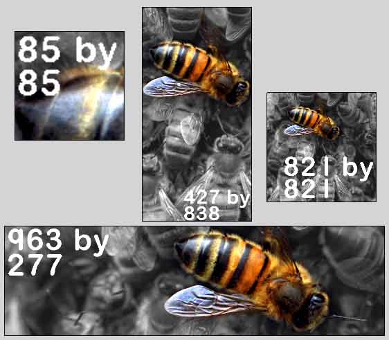

|  |
| Using
the 'Image Plane' option in the Primitives menu allows the user to
bring a reference image into Wings. A typical workflow to achieve this
follows. 1). Obtain / create / prepare your reference image (pointless continuing if you've not got one :) ) and ensure that it's saved in BMP, TIFF or TGA format and 24 bit RGB colour. (Note that .tga supports clipping paths - so you can make that 'dodgy' background transparent :) ) 2). With Wings open and nothing selected, click (RMB) in the main window. Wings will now display the 'Primitives' menu, which includes 'Image Plane'. 3). LMB on 'Image Plane' to get the 3 image file options - choose the correct type for your (saved) image file (LMB) 4). Select the appropriate file, ensuring correct file format and open it. 5). Wings imports your image (placing it onto a 2-sided primitive) and centres it on the XYZ origin, image facing outwards along the +X axis. 6). Repeat the above procedure for other images (if required) and move / rotate / scale them as necessary. 7).Image Planes (like other items) can be renamed. Window | Geometry Graph to display the appropriate window. RMB on the item to be renamed and pick rename option (can also lock the image plane to stop it being accidentally moved) If you don't want an image on both sides of your image plane, select the face you want to make plain and use Face | Material -> Default. Some comments (WU = Wings Units) The smaller pixel dimension of your image will always correspond to 2 WU in Wings (edge length of a default cube). Wings will adjust the other dimension accordingly to maintain the aspect ratio of the original reference image. The above has significant implications if you're intending to bring several images into Wings (maybe from different souces) and want to maintain the correct scale between them. Once in Wings, the image primitive can be manipulated with standard transformation tools to place it on the appropriate axial plane If working in wireframe mode, I've found it useful to (temporarily) set appropriate edges to hard - so they (as diff. colour) show up easier amongst the general mass of geometry. (I have make hard / soft and select by hard edges on hotkeys, which, imo makes life easier for this) Although you can't tweak hidden geometry, remember that you can select hidden verts and use standard tools. Wireframe mode Press V for vert mode Press and hold shift Drag marquee around vert(s) Release shift Release LMB |
| The
montage above is a screen grab of sample images that have been
brought into Wings. The numbers show the original pixel dimensions of
the images, as prepared in Photoshop. Note how the two square
images both have sides of length 2WU, even though one is nearly 10
times the size of the other. (After arranging the image primitives in Wings, View-> X (Ortho) was used and the grab taken to produce the montage) Image Planes can be extruded, connected, loopcut, tweaked, rotated and generally 'messed around with' - 'sliced and diced' with the image being transferred through the slices like a stick of Blackpool rock (apols to non-UK Wingers :) ) - is one option. |
| Image Plane (Primitive) |